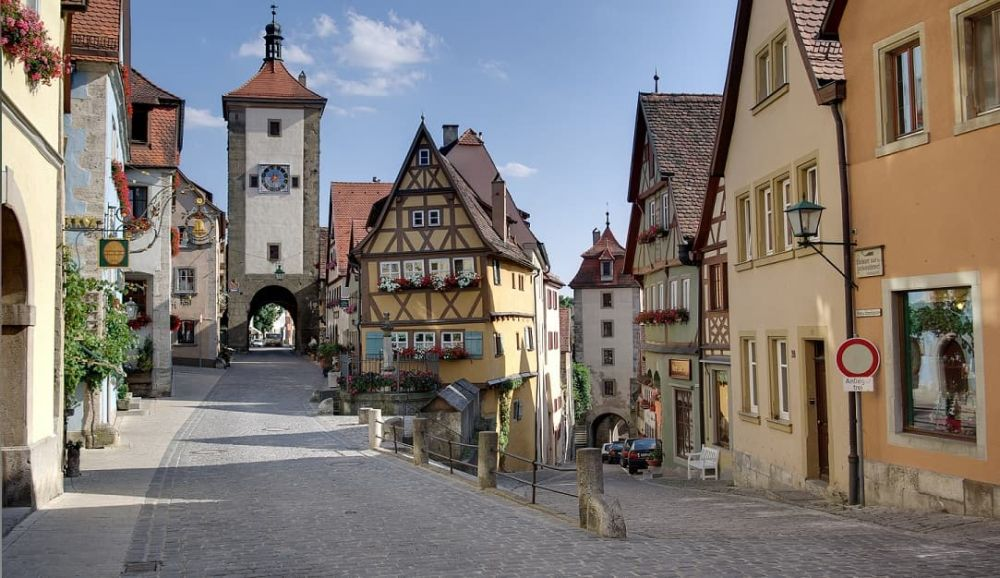

Descoperă Rothenburg ob der Tauber - O călătorie în orașul medieval
Rothenburg ob der Tauber este un oraș medieval pitoresc din Germania, oferind o varietate de atracții pentru vizitatori:
-

Centrul istoric - Farmec medieval
Orașul vechi impresionează prin străduțele sale pavate, clădirile cu jumătate de lemn și atmosfera autentică.
-

Zidurile orașului - Fortificații impresionante
Fortificațiile bine păstrate și turnurile oferă vederi panoramice asupra orașului și împrejurimilor.
-

Târgul de Crăciun - Magie sărbătorească
Orașul este renumit pentru târgul său de Crăciun, care aduce o atmosferă magică în timpul sezonului festiv.
-

Muzeul de Crăciun German - Tradiții festive
Acest muzeu oferă o privire în istoria și cultura târgurilor de Crăciun din Germania.
-

Custodele de noapte - Povestiri din trecut
Custodele de noapte oferă tururi ghidate nocturne în costum medieval, povestind istorii și legende ale orașului.
Concluzii
Rothenburg ob der Tauber te transportă într-o lume medievală, cu farmecul său unic și atmosfera nostalgică.